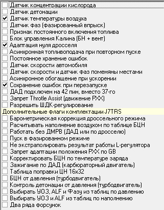

Приветствую друзья!
После того как я в БЖ описал калибровки Пуска и Холостого хода прошивки TRS, заметил что не описал вкладку Флаги комплектации. В общем как всегда я начал с задницы. Так что давайте начнем заново! Я снова уточню, что не являюсь профессионалом в этой области, но определенный багаж знаний уже имею. Вообще если желаете почерпнуть много интересного по прошивке, то рекомендую посетить БЖ DimonErshov, в данный момент это кладезь инфы для начинающих, на драйве полноценнее инфы нет. И Серега zx896 снимает много обучающих видеороликов.
Если вы решили в свой мотор поставить тюняшек, то прежде чем шить, необходимо определиться с железом. Какой измеритель воздуха будет у вас стоять: ДАД или ДМРВ, или вовсе без него. Какие стоят форсунки, какое давление топлива. Необходимо в прошивку ввести ВСЕ данные о датчиках, если их нет или если ваши датчики отличаются от стока.

Флаги комплектации – это вкладка, где мы сообщаем прошивке о том, что у нас из датчиков установлено на авто, и какие параметры нам необходимо включить или наоборот отключить. Если галочка отмечена – значит этот параметр активен, если нет галочки – параметр НЕ активен.
Датчик концентрации кислорода воздуха – есть ли у нас на авто родной УДК, обычный лямбда зонд или датчик кислорода, как вам удобнее.
Датчик детонации – есть ли у нас датчик детонации
Датчик температуры – присутствует ли у нас датчик температуры воздуха, далее ДТВ. Если у вас 116 или 037 ДМРВ, то ДТВ встроен внутри корпуса
Датчик фаз – наличие этого датчика позволяет фазировано впрыскивать топливо в нужный момент, который настраивается калибровкой «Фаза впрыска». Теория гласит что с этим датчиком мотор экономнее, несколько мощнее, и проще настраивать ХХ если установлены производительные форсунки. Без ДФ впрыск топливо будет попарно-параллельный.
Признак постоянного включения топлива – эта калибровка запрещает отключение топлива совсем. Т.е. при езде топливо всегда будет впрыскиваться в цилиндры, что увеличивает расход, но упрощает режим входа с ПХХ на ХХ
Блок управления Калина – Так вышло что АвтоВАЗ при выпуске Калины зачем-то на привычном нам Январе 7.2 поменял некоторые пины местами, например пин бензонасоса и пин вентилятора охлаждения. Вот именно этой калибровкой вы сообщаете прошивке, чтобы она знала на каких пинах у нас находятся вентилятор и бензонасос.
Адаптация нуля по дросселю – эта таблица отвечает за то, что после каждого включения зажигания, прошивка по начальному АЦП определят где именно у нас положение закрытого дросселя.
Асинхронная подача топлива при повторном пуске – если вы начали крутить стартером и по каким-то причинам мотор не завелся, то следующая попытка запуска мотора будет опять начинаться с Асинхронной подачи топлива, о которой подробно описано в режиме Пуск.
Постоянное хранение ошибок – Во время езды у нас могут появляться временные ошибки. Например въехали в лужу и залили катушку, у нас пошли пропуски зажигания, загорелся чек. Через определенный период времени когда ЭБУ понял что все в порядке, он потушит ЧЕК и сотрет ошибку. И если поставить постоянное хранение ошибок, то любая ошибка будет сохраняться и не будет удаляться ни при каких условиях.
Датчик скорости авто – есть ли у нас ДС, лучше чтобы он был
Датчик скорости и датчик фаз поменяны местами – из названия все ясно ;)
Асинхронное обогащение при ускорении – своего рода ускорительный насос для фазированного впрыска. При резком нажатии газа, происходит дополнительная подача топлива.
Сохранение ошибок при перезапуске – при выключении зажигания ошибки будут сохраняться, а не стираться.
ДАД подключен на 47 – прошивка дает нам выбор, на какую ногу можно подключить ДАД
Запрет Throttle asssssist – запрет движения РХХ при режимах ПХХ. Этот алгоритм используется для плавности перехода от малых нагрузок в режим ХХ, так же контролирует чтобы при переходе обороты не зависали.
Разрешить ШДК регулирование – если у вас есть ШДК и вы желаете его поставить, то отметьте эту галочку
Дополнительные флаги комплектации ТРС — это дополнительные функции прошивки TRS, которые автор решил добавить.
Барометрическая коррекция дроссельного режима — если у вас установлен ДАД не в ресивер, а на улицу, то эта настройка будет учитывать атмосферное давление воздуха, его изменение или перепады
Рассчитывать наполнение воздухом по таблице БЦН – если вы пожелаете установить дросселя без ДАД, то эта таблица заставляет работать ЭБУ только по одной таблице БЦН, ПЦН не будет работать в расчете
Работать без ДМРВ – если вы установите ДАД или вообще дросселя, то этой галкой указываете об изменениях в конфигурации
Пуск в фазированном режиме – это пуск мотора всегда в фазированном режиме. Пуск в фазированном режиме актуален при больших форсунках, когда на ХХ они работают на минимально возможном времени открытия. Тогда и пуск в ПП режиме не настроить адекватно
Не экстраполировать результаты работы Л-регулятора – запрет таблица обучения по ДК. Не знаю как именно работает таблица, но если у вас нет ДК, то эта таблица явно не нужна.
Запрет адаптации положения РХХ от GB – запрещает адаптироваться РХХ от расхода воздуха. Если машина на ДАД, то обязательно галочку поставить, так как на ДАД расход воздуха считается неверно.
Корректировать БЦН по температуре заряда – коррекция базового циклового наполнения в зависимости от температуры заряда. Температура заряда очень сложная тема, и при неверной настройке ее, смесь будет плавать в зависимости от температуры ОЖ, в зависимости от температуры окружающей среды. Штука нужная, но настраивается плохо.
Зажигание по ДАД – если у вас карбюраторный мотор, то зажигание будет выставляться от давления.
Таблица поправки ЦН 16*32 – стандартная таблица это 16*16, этой галочкой мы увеличиваем количество точек в таблице для более точной настройки циклового наполнения
БЦН от давления – конкретно не знаю зачем она, но по описанию это ускорительный насос от давления
Контроль детонации от давления – контроль детонации двигателя не от положения ДЗ и оборотов, а по давлению.
Выбирать УОЗ АЛЬФ и Фазу из таблиц по давлению – если у вас ДАД, то при этой галочке, расчет состава смеси, УОЗ будет считаться не по положению ДЗ или наполнению, а именно по давлению.
Выбирать УОЗ АЛЬФ и Фазу из таблиц по наполнению – это сток режим работы января, т.е. угол и состав смеси будет рассчитываться от количества воздуха поступившего в мотор, а не по ДЗ или давлению
Два ряда форсунок – если у вас есть второй ряд форсунок, то надо указать это.
Надеюсь я смог вполне доступно описать калибровки. Если будут вопросы или дополнения — пишите!
Спасибо за прочтение!
Всех благ